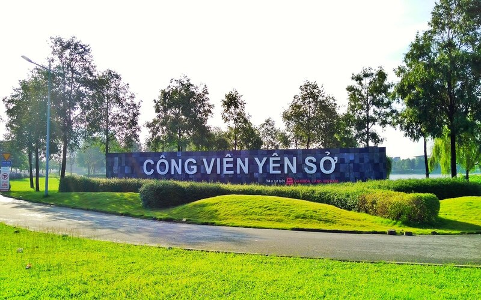
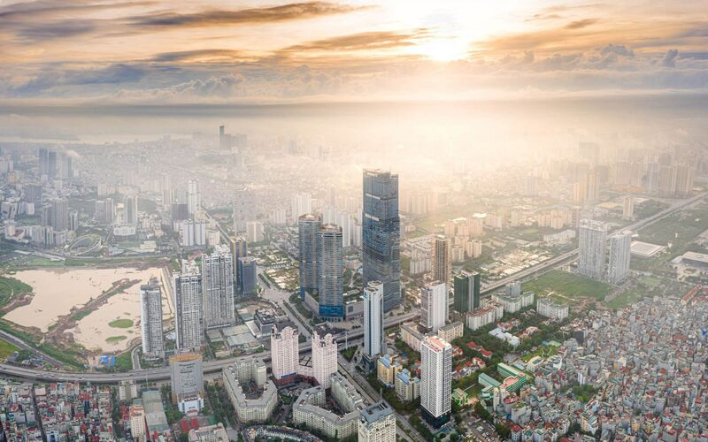
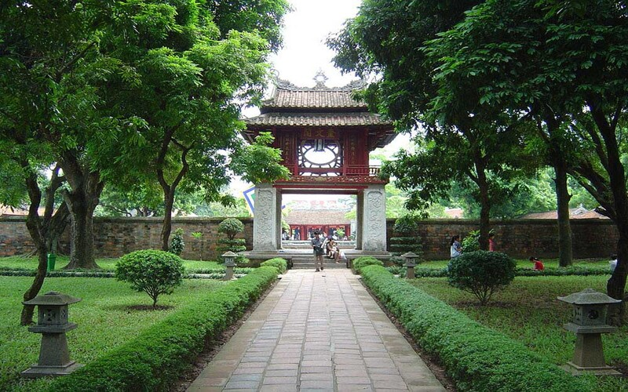

Cầu Thê Húc
Một trong những biểu tượng của Hà Nội ngàn năm văn hiến

Chùa Một Cột
Biểu tượng văn hoá ngàn năm văn hiến của Hà Nội

Chùa Trấn Quốc
Ngôi chùa cổ linh thiêng đẹp nhất Việt Nam
Xây dựng Hà Nội thành đô thị “xanh, văn hiến, văn minh và hiện đại”
Hà Nội đang vươn mình từng bước hiện thực hóa mục tiêu trở thành một thành phố hiện đại, xứng tầm là Thủ đô có vị thế trong khu vực và thế giới. Trong những năm qua công tác quy hoạch, xây dựng, quản lý và phát triển đô thị của Hà Nội đã có nhiều chuyển biến tích cực, rõ nét, đóng vai trò quan trọng không chỉ trong phát triển kinh tế - xã hội mà còn góp phần xây dựng bộ mặt nội đô ngày càng khang trang, hiện đại.

Chỉ cách đây khoảng 5 năm, người dân Hà Nội khó có thể hình dung diện mạo đô thị, nền kinh tế, diện mạo của Thủ đô lại có sự thay đổi nhanh đến như vậy. Sự “thay da, đổi thịt” ấy đến từ công tác xây dựng, phát triển không gian đô thị và đã có những thành công bước đầu với những bước tiến đột phá trong phát triển hạ tầng giao thông. Bên cạnh đó, Hà Nội còn phát triển nhiều dự án nhà ở, khu đô thị mới hiện đại, tạo lập môi trường đô thị với điều kiện sống mới, văn minh, hiện đại…Sự “nâng tầm” của đô thị Hà Nội được bắt đầu mạnh mẽ từ khi từ khi Hà Nội mở rộng địa giới hành chính năm 2008 và đặc biệt, sau 5 năm triển khai Chương trình số 06-Ctr/TU của Thành ủy Hà Nội khóa XVI về “Phát triển đồng bộ, hiện đại hóa từng bước kết cấu hạ tầng đô thị, tăng cường quản lý trật tự xây dựng, đất đai, môi trường, xây dựng đô thị văn minh, hiện đại giai đoạn 2016-2020”.Dấu ấn đậm nét nhất là vừa qua Hà Nội đã ban hành các quy hoạch và phủ kín gần 90% diện tích tự nhiên với khoảng hơn 60 các đồ án quy hoạch như quy hoạch phân khu, quy hoạch chi tiết, trong khi các năm trước mỗi năm chỉ độ 15-20 đồ án. Đến đầu năm 2020, Hà Nội cơ bản hoàn thành các loại quy hoạch. Việc hoàn thiện này là một trong những thành tựu lớn, những công cụ, định hướng cơ bản, một minh chứng cho việc Hà Nội đã quyết liệt triển khai quy hoạch.
Một trong những đột phá làm thay đổi bộ mặt đô thị Thủ đô, phải kể đến việc khớp nối quy hoạch giao thông của Hà Nội (cũ) với quy hoạch giao thông của Thủ đô sau sáp nhập và các hoạt động từ quy hoạch đến đầu tư kết cấu giao thông Thủ đô với các vùng lân cận. Nhờ đó, những vùng đất ven đô vốn một thời hoang vắng xưa kia đã chuyển mình mạnh mẽ, với hàng trăm các dự án quy hoạch khu đô thị mới, khu nhà ở đã, đang được triển khai như: An Khánh, Văn Quán, Thiên đường Bảo Sơn, Việt Hưng, Mỹ Đình,... Ngày càng nhiều trung tâm thương mại, mua sắm: Vincom (quận Hai Bà Trưng), Aeon Mall (quận Long Biên, quận Hà Đông); Lotte (quận Ba Đình),... hình thành, trở thành các điểm đến thương mại - văn hóa - xã hội, phục vụ nhu cầu vui chơi, giải trí của người dân.
Định hướng phát triển không gian đô thị của Hà Nội theo mô hình chùm đô thị, gồm khu vực đô thị trung tâm và 5 đô thị vệ tinh, các đô thị sinh thái và vùng nông thôn được kết nối bằng hệ thống đường vành đai kết hợp các trục hướng tâm, có mối liên kết với mạng lưới giao thông vùng Thủ đô và quốc gia. Trong đó, đô thị trung tâm được phân cách với các đô thị vệ tinh, cách thị trấn bằng một hành lang xanh chiếm tới 70% diện tích đất tự nhiên của thành phố.
Thời gian qua, Thành phố đã tăng cường các trạm quan sát để có những giải pháp xử lý kịp thời; vấn đề nước thải, cảnh quan đô thị cũng đã dần được giải quyết, tạo ra cảnh quan xung quanh, ven hồ. Trong nội đô, công tác khai thác, sử dụng đường vỉa hè, kết nối giao thông cũng đã được chú trọng, đẩy mạnh các khu đô thị mới theo hướng hiện đại. Sự đột phá trong diện mạo được thể hiện cả về không gian kiến trúc, góp phần nâng cao chất lượng sống của người dân, đặc biệt tạo ra diện mạo mới xanh - sạch - đẹp - văn minh - hiện đại-đáng sống.
Lời giới thiệu
Hẳn bạn đã nghe rất nhiều về Hà Nội - Thủ đô hơn 1000 năm tuổi. Không chỉ nổi tiếng với lịch sử lâu đời, giàu bản sắc, văn hoá truyền thống dân tộc, vùng đất này còn được biết đến là một trong những địa điểm thu hút nhiều du khách trong và ngoài nước. Qua trang web này, chắc chắn bạn sẽ yêu nó ngay từ những thứ mà nó có, từ văn hoá, phong tục tập quán, con người, nhịp sống cho đến cảnh vật và cả nền ẩm thực hấp dẫn mà không nơi nào có được.
Hà Nội Xưa
Người Hà Nội vẫn tự hào về những dãy phố lâu đời, nơi gửi gắm bao hồi ức, hoài niệm xưa cũ, nét cổ kính Hà Nội vẫn vẹn nguyên giữa thành phố đang vươn mình thay đổi quá nhanh

Hà Nội Mới
Sau 64 năm giải phóng Thủ đô, Hà Nội nay đã và đang vươn mình trở thành một thành phố hiện đại bậc nhất khu vực và xứng đáng là trái tim của cả nước.

36 Phố Phường
Hà Nội 36 phố phường là cái tên đã được hình thành từ thời Lý Trần. Đó là khi các khu sinh hoạt dân cư buôn bán dần bắt đầu hình thành, dân cư từ khắp nơi tụ tập lại và trở thành khu vực sầm uất nhất kinh thành thời bấy giờ.